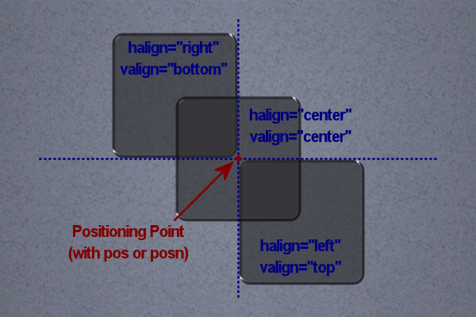

Positioning¶
Trackmanai Forever features two positioning systems to be backwards compatible with Trackmania United ManiaLinks. In general, the center of the screen always resembles the x=0 y=0 position. Whenever possible you should use the modern positioning system as it enables a smaller range between two possible positions. Elements nested within others (such as <frame>) add their position to the parents position.
Modern (United Forever & Nations Forever)¶
The modern positioning system uses posn and sizen.
X (Vertical)¶
The X axis has a range of -64 to 64 where higher values are closer to the right edge of the screen.
Y (Horizontal)¶
The Y axis has a range of -48 to 48 where higher values are closer to the upper edge of the screen.
Z (Depth)¶
The Z axis has a range of -32 to 32 where higher values resemble higher elements.
Width¶
An elements width via sizen has a range of 0 to 128. The default value is 64.
Height¶
An elements height via sizen has a range of 0 to 96. The default value is 64.
Classical (United & Nations)¶
The classic positioning system uses pos and size.
X (Vertical)¶
The X axis has a range of -1.00 to 1.00 where higher values are closer to the left edge of the screen.
Y (Horizontal)¶
The Y axis has a range of -0.75 to 0.75 where higher values are closer to the upper edge of the screen.
Z (Depth)¶
The Z axis has a range of -0.50 to 0.50 where lower values resemble higher elements.
Width¶
An elements width via size has a range of 0.0 to 2.0.
Height¶
An elements height via size has a range of 0.0 to 1.5.
Z-Index¶
When two elements share the same position, one will be drawn above the other. To decide which element should be drawn in which order, you can use the Z axis. Imagine two elements at the same position. One of them has a Z value of 0 while the other has a value of 10. The element with a Z value of 10 will always be drawn above the other.
Warning
Keep in mind that the z-index is the other way around when using pos instead of posn.
Alignment¶
It is possible to align various elements with the halign and valign attributes. It shifts the pivot point to one of nine possible locations which are the basis for the position of the element. The standard values for halign and valign are left and top, making the upper left corner the anchor for all elements unless otherwise specified.
